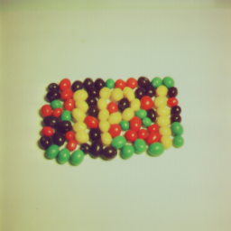

The Importance of HTML and coding
In this document I hope to show and explain how HTML and coding are important in the computers of today and what they do.
Content
- What is coding and why is it important?
- Uses of coding
- Examples of code
- The importance of HTML
- What is CSS?
- The basics of HTML
- JavaScript
What is coding and why is it important?
Coding is writing instructions for a computer to read and process, it tells the computer what to do and how to do it. In this sense coding could be considered the absolute most literal way of communicating. Code does everything in computers from running the operating system to running a source game. For developers computer programing is a way to organize their thoughts.
Most of editing code in text is very visual in that you can see where all of the variables you put are, where certain functions are, and where what parts of the code does. For example: in the Processing programming sketchbook there are two main functions used in every sketch, "setup()" and "draw()".
void setup() {
size(800, 400);
}
void draw() {
}
In setup you put in all the code to be ran as the sketch starts up, and draw runs the code in it 60 times a second.
Organizing your code allows it to be broken down into "chunks" which can be worked on by a group of developers. Many good developers organize their information in order to make the coding process a lot easier and quicker.
Uses of coding
Opportunities for coding are showing up everywhere, personally I think learning and using code applies in similar ways to learning music. Music is everywhere such as in movies, TV shows, games, and on the radio. Coding is much the same. CGI has been used in movies since the 80s, video games are a huge market entirely depended on coding. Many designers and visual artists use code to create visual artwork or simulations that would have been impossible to make by hand.
Over the past couple of years many popular figures in the tech industry have encouraged countless times for schools to start teaching code in classrooms for students to learn and get a mindset for it. Steve Jobs once said, “I think everybody in this country should learn how to program a computer because it teaches you how to think."
There are more tech related jobs than ever before. In 2015 seven million jobs were opened that required coding skills. Interestingly half of all program openings are in fields outside of technology including Finance, Manufacturing, and Health-care.
With programming you can create and use physics engines for making games, you can make something you can run in anyones browser, or you could make a program that runs on a computer. Using programming you can make difficult operations easier by calculating it in code. You can also do a lot more than what you can do with just a calculator. Similarly in a sort of symmetry some calculators like TI-84s have programmable items on them.
Examples of code
Programming languages are extremely logical; they gives the computer rules and objects to follow. The very most basic form of coding is telling the computer exactly what to. This becomes tedious as you may find yourself having to type the same lines over and over again. This is where variables come in. Any time you store a variable like in this example
var x = 24;
you're really just telling the computer "This is x." And any time you want to call x you use this function.
print(x); --> 24 (outputs 24)
Variables are useful for keeping track of a number without having to keep typing it. Different operators exist such as addition, subtraction, multiplication, and division for math operations.
print(x + 2); --> 26 print(x - 2); --> 22 print(x * 2); --> 48 print(x / 2); --> 12
Coding ties in really well with engineering. In engineering there are logic gates that take two true or false inputs and outputs a true or false according to the inputs. In coding there is the same sort of operators.
print(true && true); --> true
print(true && false); --> false
print(true || false); --> true ("||" means or)
print(true || true); --> true
print(false || false); --> false
There are different types of values you can assign to variables. In most programming languages you will find these type of variables:
Numbers, any real number. In the example 24.
Strings, any text or letters. The syntax for storing them is
var str = "String of letters";
Arrays, good for organizing data. A good example of the use of arrays is keeping track of players' scores with a leaderboard.
var leaderboard = [
{"name": "Player1", "kills": 14, "deaths": 20},
{"name": "RaySipe", "kills": 6, "deaths": 5},
{"name": "TheLegend27", "kills": 121745, "deaths": 2}
]
Functions are used when you want to run the same lines of code without having to retype all of it.
var A = 3;
var B = 2;
var C = 1;
function addABC() {
A = A + 1;
B = B + 1;
C = C + 1;
}
addABC();
print(A, B, C); --> 4, 3, 2
The importance of HTML
HTML is everywhere on the internet and computers. Without HTML web pages would just be text with no interaction. It is the most popular language in web design, every website since the early 90s uses HTML to function. With it you can customize the look of a webpage. Ever since HTML was put to use there have been many editors that allow the user to create a webpage without having to learn any HTML. This webpage for example was coded by me in HTML.
Usage of HTML isn't just limited to the internet. Because of how simple HTML organizes information, many programs use it in parts of a program to save space. Why develop a completely new system when you could just use HTML? Using images in user interfaces can cause problems, the image might not load, it can lose quality, it doesn't fit all screens. With HTML you don't have those problems, you can save space, it loads in any window size so you don't lose quality.
What is CSS?
CSS was first developed to make stylizing webpages so much easier than before. With the introduction of CSS web pages could completely change their appearance just by changing one line of code in the document. CSS is used to avoid repetition, instead of having to put in the style for an element you can tell the computer, "Hey, every time there's a link color it orange" or, "every paragraph of this type should be outlined in blue."
Before CSS webpages had to contain much more information and have a larger file size. As a result most early webpages had to be simple, you can still sort of see this today in old websites. CSS gives the website a better presentation to all the users, you have much more control on the appearance and it's far more consistent that way. And because it's easily read by computers it makes loading sites much faster. Updating a website's look is much harder if you had to manually change every page. Instead you could update the CSS to affect the entire site and not just one page.
The basics of HTML
HTML is a markup language and as a result it's very simple to read and understand. It was also easy for computers to go through as it doesn't have any complicated syntax. It is often one of the first programming languages learned by developers because of it's simplicity.
In HTML tags are used to organize the information on a page. Tags tell the computer what to do with the information inside the tag. Webpages can be very diverse, as a result there are dozens of tags out there for any HTML document. Tags are encased with less than and greater than brackets with the tag in between, like this <b>. To end a tag you place a slash after the first bracket like this </b>. Whatever you type between these tags will be read by the computer according to that tag. In this case it will show as bold text. The result will look like this.
Some examples of tags are:
<p>, a paragraph of text
<b>, bold text
<i>, italic text
However not all tags have to be represented as a form of text. A good example of this kind of tag is the img (image) tag, the syntax goes like this, <img src="jelly_beans.png"></img>. This displays a test image of jelly beans on screen.
JavaScript
JavaScript is a scripting language based on Java that works and operates inside a webpage. With JavaScript all sorts of ideas can be implemented. Many games or ports of games are written in JavaScript because of how common it is and how easy it is to share it.
I've known JavaScript for a while now and I've wanted to see how much I could make. In one week I ported the NES Tetris game in a webpage using JavaScript and HTML elements so it can be played in any browser. For the project I used the p5.js libraries. The final game can be played here.